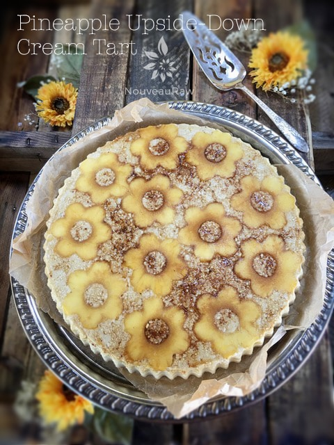
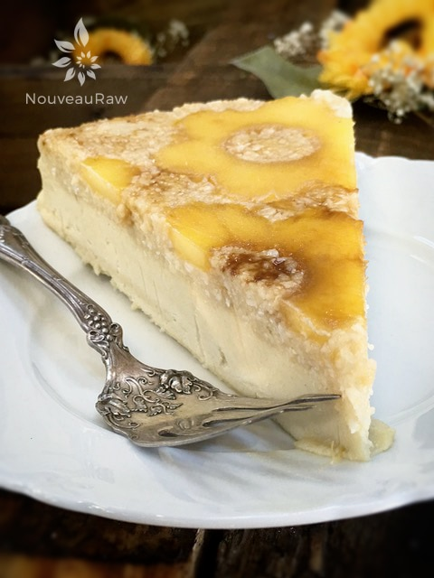
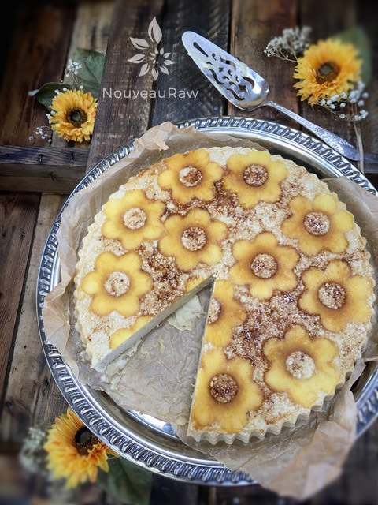
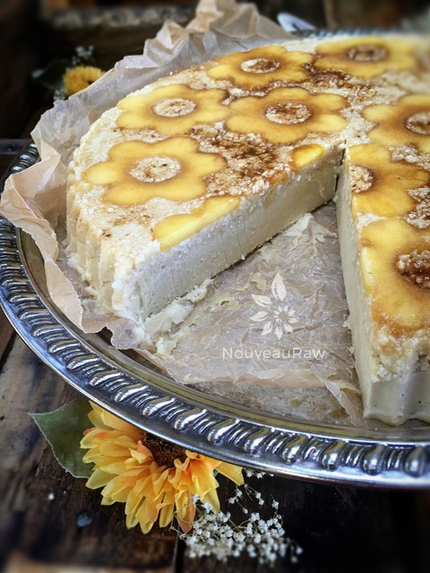

Pineapple Upside-Down Cream Tart

~ raw, vegan, gluten-free ~
Let me turn your life upside down. :)
First of all, I hope the length of this recipe doesn’t scare you off. I am using this recipe and its components as a “teaching recipe.” Please read it through from beginning to end, for I have shared what I believe are many valuable tips that you will find helpful.
Last week my husband told me, “Woman! Go make me upside-down pineapple cake!” So I said “POOF” you’re an upside-down cake!
It may have been more like, “Amie Sue, my sweet, loving, talented, love of my life… I would be forever in your debt if you could create a raw recipe that was reminiscent of a Pineapple Upside-Down Cake.” lol
Regardless of how he actually asked or how I interpreted his request, it is always my honor to make raw delights for him. He is the love of my life. :)
This tart turned out rather amazing if I do say so myself. All of the flavors melded together, creating a rich, and creamy dessert. The texture is like velvet on your tongue married with the sweet hint of pineapple.
Bob said a 1/4 of a slice would be the perfect size serving, he who ate 1 1/2 full-sized slices. Haha, This dessert is not only incredibly tasty, but it is also rich in nutrients.
Here is a fun tip for you regarding pineapple. When you bring the pineapple home, cut the crown off, and turn the pineapple upside down on a plate. Cover with plastic and let it sit for a day. Since the pineapple is basically always in an upright position, the natural sugars inside sink to the base of the fruit. With it cut and turned upside down, the juices/sugars will seep through the whole pineapple making the whole thing nice and sweet. I do hope you try this recipe and please leave a comment below. Many blessings, amie sue
Yields one 8″ tart pan
Pineapple layer:
Crust:
- 1 cup shredded coconut
- 3/4 cup raw brazil nuts, soaked
- 1/2 cup raw cashews, soaked
- 1/4 tsp Himalayan pink salt
- 5 Tbsp raw honey
Cream filling:
Preparation:
Pineapple:
- Select and use a ripe pineapple.
- Place the pineapple on its side on the cutting board and remove the stalk and the bottom.
- Stand the pineapple on end and cut the skin off of the sides in strips. Go deep enough to remove the “eyes,” the brown flecks.
- Continue cutting strips around the pineapple until you have cut all of the skin off.
- Lay the pineapple on its side again and cut 1/4″ slices. Or use a mandolin for this step, which is what I did.
- Using an apple corer, remove the pineapple core out of each slice.
- The center is very fibrous and chewy; we don’t want to use this in the dessert.
- Using a metal flower-shaped cookie cutter, press it into the flesh and cut through making flower shapes. See photos below.
- Place the pineapple “flowers” in a bowl and toss with 1 Tbsp of maple syrup. Set aside while you create the crust.
- The leftover ring pineapple from the cutouts can be saved for a smoothie, or you can dehydrate them.

Crust:
- Prepare the tart pan.
- Line the base of the pan with plastic wrap or parchment paper.
- This will make the tart easier to remove.
- Place 1 Tbsp of raw coconut crystals in a spice grinder and grind to a fine powder. Sprinkle this in the bottom of the tart pan. Set aside.
- In the food processor, fitted with the “S” blade, combine the coconut, brazil nuts, cashews, and salt. Pulse till it breaks down to a small texture.
- I have learned to go by sound when using my food processor over all these years. It will go from sounding like rocks spinning around to a gentle hum… that is when it is done processing.
- If you don’t have Brazil nuts, just replace them with more cashews. Stick with a nut that is blonde in color.
- Add the raw honey, drizzling it around the processor. Pulse until the batter sticks together. Don’t over-process.
- If you already have soaked and dehydrated nuts, you can use those instead of re-soaking them, but you may need to add a tablespoon or two for moisture.
- I use very very thick honey so if your honey is liquid, hold off on adding any water at first.
- To make this pie vegan. replace the honey with a liquid sweetener.
- Evenly sprinkle the crust batter over the pineapple layer in the tart pan. Use all of the batter. Once it is evenly dispersed, press the crust down firmly.
- Be sure to pack it all the way to the sides of the pan.
- I used a smaller Springform pan base to help me press it down evenly and firmly. You can use your hands or even a spatula to do this as well.
- Set aside and make the filling. Be sure to finish this step before making the filling.
Filling:
- In a high-powered blender combine the following ingredients in this order: nut milk, maple syrup, pineapple, cashews, and vanilla bean seeds. Process until creamy.
- This can take 1-4 minutes depending on your machine. I used a Vitamix, using the tamper to help the batter create a vortex.
- Alternatively, you can use 1/2 tsp vanilla bean paste if you don’t have the beans.
- While the machine is running and a vortex is created, drizzle the melted coconut oil into the center. The vortex will draw the oil in, mixing it well with the other ingredients.
- Now add in the lecithin. Process for about 30 seconds, just long enough to mix. The lecithin is a thickening agent, so you don’t want to dilly-dally around. :)
- Pour the filling over the crust.
- Once all the filling is poured in, grab the edges of the tart pan and tap the pan down onto the counter several times, causing all the bubbles to surface and to help the batter spread flat and even.
- Place in the freezer to firm up.
Sous Chef Suggestions:
- Make sure the pineapple is ripe. Unripe pineapple is harder to digest and not as sweet. A trick for selecting a ripe pineapple is to pluck a leaf out of the center crown. If it removes easily, it is a good sign that the pineapple is ripe.
- If you don’t have a flower-shaped cookie cutter, you can just line the pan with pineapple rings. I found the rings too large for the pan and not as decorative. You could even use a circular shaped cutter. This part is up to you.
- If you own a pineapple corer, you can use that to remove the center of the pineapple. I don’t have one, so I used an apple corer. I was able to stack several slices on top of each other at a time when doing this step.
- Raw honey ~ if you stick to using honey, make sure it is raw. Raw honey has a much thicker texture which worked perfectly for this crust mixture. Agave, in my opinion, would be too runny. I chose not to use dates or raisins as a binder because I wanted to keep the crust a blonde color.
- Brazil nuts ~ I used brazil nuts and cashews for their blonde color as well. You could use all Brazil nuts, all cashew nuts, macadamia nuts, or even soaked and skinned almonds. Personally, I feel the Brazil nut flavor was a nice compliment to the overall dessert.
- Blender ~ I recommend using a high-powered blender, so the filling texture is creamy and smooth. This will create a great mouth-feel. When adding the ingredients to the blender, always add the liquid and wet ingredients first. This is to help the blades move more freely and not bog down the machine. If your blender has a tamper, use that to move the ingredients around. If you don’t have a tamper, stop the machine periodically to scrape down the sides, making sure everything gets mixed well. I don’t recommend using a food processor because you won’t get a creamy filling.
- Vortex ~ What is a vortex? Click on the link to learn about what it is. This is an excellent technique to learn. I often refer to this in my recipes.
- Coconut oil ~ The role of the oil in this dessert to help it “set up” and remain firm when cutting and serving it. Coconut oil solidifies at 76 (F) or 24 (C), which will help create a firm texture. Do not omit.
- Lecithin ~ you can use lecithin granules (soy-based) ground into a powder, or you can use liquid lecithin (sunflower based). Use the same measurement with either one. Lecithin is a thickening agent and should always be added to a recipe at the very end. Once you add the lecithin, pour the filling right away. This is not a time to take a nap and plan on finishing your dessert later. :) I don’t recommend omitting this ingredient or replacing it with something else.


© AmieSue.com